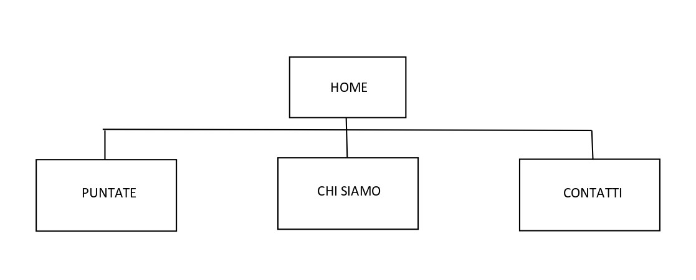
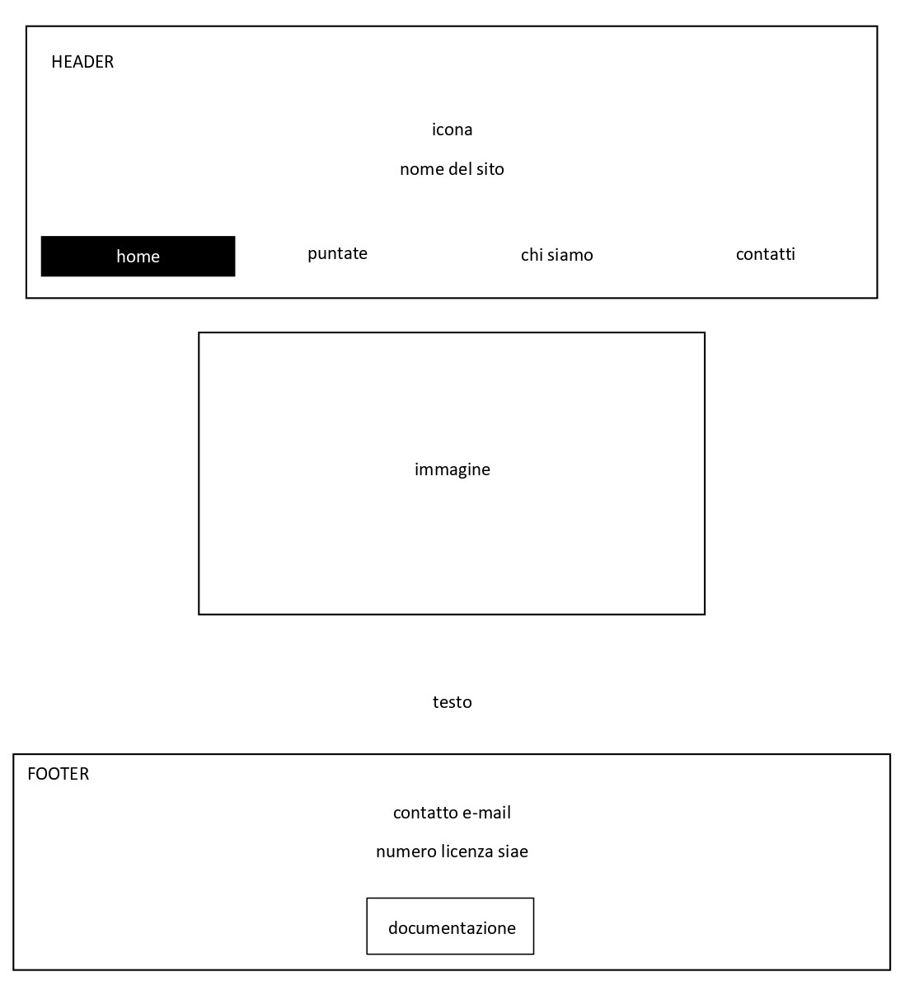
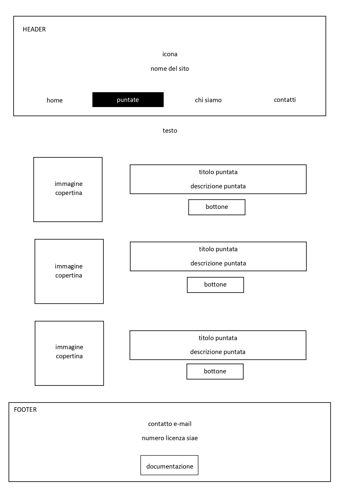
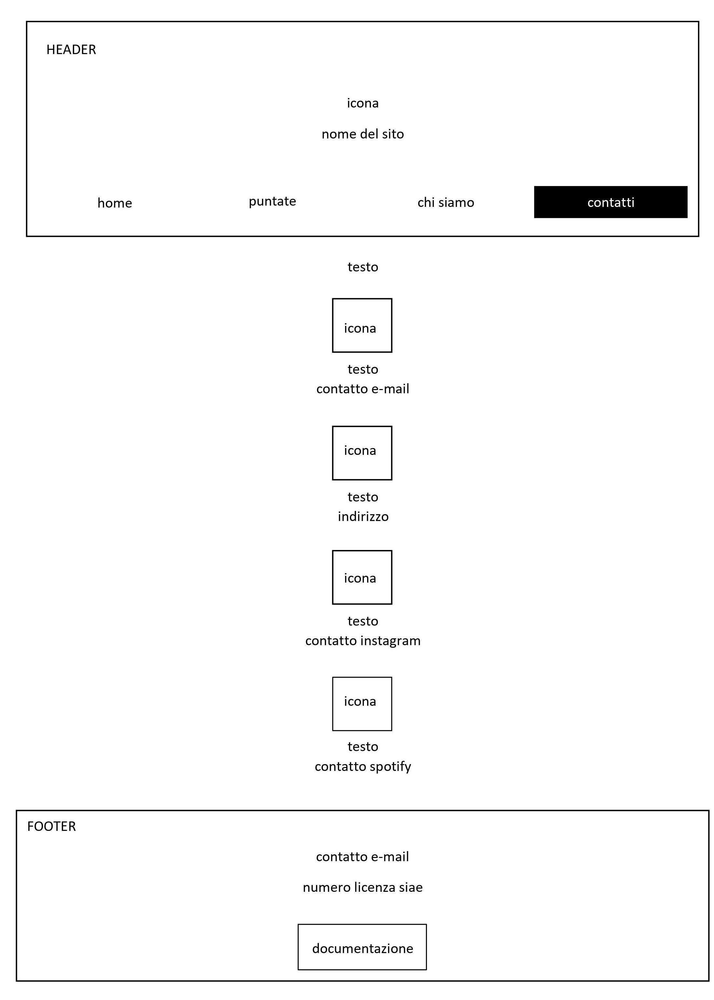

Documentazione.
Abstract.
Il sito del podcast Borderline fornisce all'ascoltatore la possibilità di trovare e ascoltare in modo semplice e ordinato le varie puntate del programma. Inoltre, è presente una sezione per chi avesse voglia di conoscere meglio il progetto e le conduttrici. Borderline è un podcast che parla di viaggi e cultura estera in maniera molto leggera e spontanea, proprio per questo motivo è un programma adatto a tutte le fasce d'età. Ho deciso di creare questo sito perchè credo che il progetto di cui questo podcast fa parte sia molto interessante e che quindi debba essere scoperto e conosciuto da sempre più persone.
Project Management Plan.
Benchmarking:
Obiettivi: farsi conoscere in modo più approfondito, creare un'audiece più ampia, appassionare gli ascoltatori al progetto e raccogliere in modo più funzionale e ordinato le puntate.
Target utente: questo tipo di podcast è potenzialmente adatto ad un pubblico di qualsiasi età ma abbiamo notato che gli ascoltatori sono prevalentemente giovani dai 15 ai 25 anni.
Competitors: il competitor principale è il sito di Radio CAP, ossia il sito apposito per raccogliere le informazioni del progetto più ampio, di cui il nostro podcast Borderline fa parte. Questi due siti sono quindi comparabili: a differenza del sito di Radio CAP (molto più ampio e complesso), questo sito si concentra solamente sul singolo programma e rende più facile agli ascoltatori la navigazione tra le puntate e permette a chi è interessato di conoscere meglio la storia del podcast stesso. Il target utente dei due siti è simile ma non uguale: il sito che ho sviluppato si concentra sui giovani dai 15 ai 25 anni, mentre il sito di Radio CAP prende come riferimento un target più ampio: quello che va dai 15 ai 60 anni, questo perchè la sezione "eventi" si rivolge a chiunque voglia prendere parte alle serate che vengono proposte.
Struttura e layout.
Architettura del sito:

Wireframe:
Home

Puntate

Chi siamo

Contatti

Look and feel:
Ho preferito mantenere il sito molto semplice e lineare, quindi ho adottato la filosofia del "less is more" per tutte le scelte grafiche che ho dovuto prendere. Per quanto riguarda i fonts ho deciso di utilizzare un solo font (Poppins) con spessore diverso sulla base delle occasioni d'uso. La palette colori che ho scelto è minimal: il verde è il colore principale e ho scelto di usarne tre sfumature diverse, la più chiara (#4c8c4a) utilizzata per i bottoni e per le icone, la più scura per il testo (#003300), mentre la sfumatura di verde intermedio (#1b5e20) è presente nell'header e nel footer. Oltre al verde ho scelto di aggiungere il bianco, usato per il testo del menu e un grigio molto chiaro come background color delle varie pagine (#e0dbd8).
Linguaggi e strumenti.
I linguaggi web utilizzati sono HTML e CSS. Per quanto riguarda gli elementi tecnologici utilizzati a supporto della porgettazione ho usato Github per la pubblicazione, Sublime Text 2 per la scrittura del programma, Bootstrap come ausilio nella programmazione, Google Fonts per i font e Font Awesome per le icone.
Communication strategy.
Background:
Il sito è efficace per aumentare la conoscenza e la visibilità del progetto in quanto non esisteva il sito apposito per il podcast. Inoltre, le puntate sono facilmente ascoltabili e l'untente, se interessato, può leggere la storia del programma. Credo che il sito sia estremamente funzionale.
Obiettivo comunicativi:
L'obiettivo principale del sito è quello di pubblicizzare e aumentare il pubblico del podcast. Il sito è stato realizzato in moodo semplice ed efficace per permettere una navigazione agile tra i vari contenuti del sito.
Target audience e messaggio:
Il target audience che cerchiamo di raggiungere è quello che va dai 15 ai 25 anni, ma il podcast è adatto a tutte le fasce d'età in quanto l'argomento trattato, ossia i viaggi e la cultura estera può essere interessante anche per i più grandi. Il target audience viene raggiunto soprattutto tramite la nostra pagina Instagram. La difficoltà maggiore che abbiamo riscontrato è quella di raggiungere la fascia di audience con età compresa tra i 35 e 50 anni in quanto spesso non usano i social.
Promozione:
La promozione del sito è stata fatta prinicpalmente tramite social: sulla pagina Instagram e in gruppo di Whatsapp.